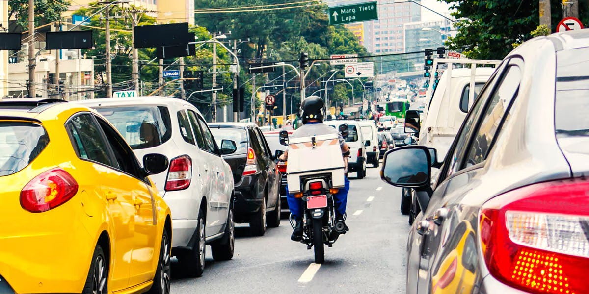

1. Equipamentos de Segurança

O uso correto de equipamentos de segurança é essencial para proteger a vida do motofretista, especialmente considerando os riscos envolvidos no trânsito. Vamos ver os principais:
- Capacete com viseira: O capacete é obrigatório e deve ser de boa qualidade. A viseira ajuda a proteger os olhos contra vento, poeira e detritos, além de evitar cegueira temporária ao pegar chuva.
- Jaqueta com proteção: As jaquetas para moto geralmente vêm com proteções nos ombros, cotovelos e costas. Isso é essencial em caso de queda, pois minimiza os danos à pele e aos ossos.
- Luvas reforçadas: As luvas ajudam a evitar lesões nas mãos em caso de queda, além de garantir maior aderência ao guidão. Sempre opte por luvas que cubram os pulsos, que são vulneráveis.
- Botas de segurança: As botas protegem os pés e tornozelos, evitando torções e lesões sérias. Além disso, elas oferecem melhor controle sobre a moto, principalmente em frenagens.
Dica: Imagine um cenário onde um veículo inesperadamente corta sua frente. Caso esteja usando os equipamentos corretos, como a jaqueta e o capacete com viseira, o impacto será menos danoso.
2. Direção Defensiva

Adotar uma postura defensiva pode ser a chave para evitar acidentes. Vamos explorar algumas práticas importantes para aplicar no dia a dia:
- Antecipe as ações dos outros motoristas: Ao trafegar pelas ruas, é fundamental ficar atento ao comportamento de outros motoristas. Observe o movimento de outros veículos e se há sinais de perigo (como a mudança de faixa sem sinalização).
- Evite os pontos cegos: Sempre evite posicionar sua moto nos pontos cegos dos carros. Isso é crucial para a sua visibilidade e segurança.
- Mantenha distância segura: Mantenha uma distância de pelo menos dois segundos do veículo à frente. Isso lhe dá tempo suficiente para reagir a qualquer imprevisto.
- Seja visível: Mesmo durante o dia, mantenha os faróis acesos. A visibilidade aumenta e você se torna mais fácil de ser visto pelos outros motoristas.
Dica: Se você está atrás de um carro e ele começa a reduzir a velocidade sem motivo aparente, mantenha uma distância maior para evitar colisões.
3. Mecânica Básica de Veículos Leves

Manter a moto ou o veículo leve em bom estado não se limita à parte externa. Aqui estão alguns cuidados fundamentais com a mecânica do seu veículo:
- Troca de óleo: O óleo do motor deve ser trocado regularmente, conforme o manual do proprietário. Isso garante a lubrificação adequada das peças internas e impede o superaquecimento do motor.
- Sistema de transmissão: Verifique o sistema de transmissão periodicamente. Isso inclui a corrente, a embreagem e o câmbio. Com o tempo, a transmissão pode sofrer desgaste, comprometendo a troca de marchas e a performance da moto.
- Pneus: A manutenção dos pneus é essencial para garantir aderência e segurança. Verifique regularmente a pressão, o alinhamento e o desgaste dos pneus. Pneus mal calibrados podem comprometer a dirigibilidade e aumentar o consumo de combustível.
- Filtros de ar e combustível: Os filtros são responsáveis por manter o motor funcionando de maneira eficiente. Filtros sujos podem reduzir o desempenho do motor e até prejudicar outros componentes.
Dica: Realizar a troca de óleo dentro dos prazos estabelecidos é fundamental para garantir que o motor trabalhe de forma suave e eficiente.
4. Manutenção Preventiva

Manter a moto em boas condições evita gastos extras com reparos e aumenta sua segurança ao longo do tempo. Confira as principais manutenções preventivas:
- Troca de óleo: A troca de óleo deve ser feita a cada intervalo recomendado pelo fabricante. O óleo sujo prejudica a lubrificação do motor, resultando em maior desgaste e superaquecimento.
- Lubrificação da corrente: A corrente deve ser lubrificada regularmente para evitar desgastes e quebras. Idealmente, a cada 500 km ou quando perceber que a corrente está seca.
- Troca de pneus: Quando o pneu atingir a profundidade mínima de sulco (geralmente 1mm), deve ser trocado. Pneus desgastados comprometem a estabilidade e segurança da pilotagem.
- Alinhamento e balanceamento: Fazer alinhamento e balanceamento dos pneus regularmente melhora a estabilidade da moto e evita desgaste irregular nos pneus.
Dica: Uma troca de óleo negligenciada pode fazer o motor superaquecer e até mesmo quebrar. Por isso, a manutenção preventiva é essencial.